Go to a hospital today if you have fever plus any of thesePumunta sa ospital ngayong araw kung may lagnat at alinman sa mga itoAdto sa ospital karong adlawa kung naay hilanat ug bisan usa niiniMunta king ospital ngeni aldo nung atin kang lagnat at nanumang metung kareti
Very little or no urine for 12 hours; confusion or unusual sleepiness; difficulty breathing; bleeding from the gums, nose, or in vomit, stool, or urine; yellow eyes with tea- or cola-colored urine; or a painless black scab on the skin together with high fever. Do not wait for the fever to break, and do not treat these signs at home.Napakakaunti o walang ihi sa loob ng 12 oras; pagkalito o kakaibang antok; hirap sa paghinga; pagdurugo sa gilagid, ilong, suka, dumi, o ihi; dilaw na mata at ihing kulay-tsaa o kulay-cola; o walang-sakit na itim na langib sa balat kasabay ng mataas na lagnat. Huwag hintaying bumaba ang lagnat, at huwag gamutin sa bahay ang mga senyales na ito.Diyutay kaayo o walay ihi sulod sa 12 ka oras; kalibog o katingalahang katulgon; lisod moginhawa; pagdugo sa lagos, ilong, suka, tai, o ihi; dalag nga mata ug ihi nga kolor-tsa o kolor-cola; o walay sakit nga itom nga langib sa panit uban sa taas nga hilanat. Ayaw hulata nga mohubas ang hilanat, ug ayaw tambali sa balay kini nga mga timailhan.Kakaunti o alang ihi king lub ning 12 oras; pamagkalitu o kakaibang katudtud; kasakitan king pamanginga; pamaldugu king gilagid, arung, sinuka, tai, o ihi; maniyaw a mata at ihing kulay-tsa o kulay-cola; o alang sakit a maitim a langib king balat kayabe ning matas a lagnat. E mu panayan a bumaba ing lagnat, at e mu gamutan king bale deng senyales a reti.
The one-minute answerAng sagot sa isang minutoAng tubag sa usa ka minutoIng sagot king metung a minutu
- Several tropical infections can cause acute kidney injury (AKI) within days: leptospirosis, dengue, scrub typhus, and malaria. Each harms the kidney in a slightly different way.Ilang impeksyon sa tropiko ang kayang magdulot ng acute kidney injury (AKI) sa loob lamang ng ilang araw: leptospirosis, dengue, scrub typhus, at malaria. Bahagyang magkakaiba ang paraan ng pagpinsala ng bawat isa.Pipila ka impeksyon sa tropiko ang makahatag og acute kidney injury (AKI) sulod lang sa pipila ka adlaw: leptospirosis, dengue, scrub typhus, ug malaria. Gamay nga lahi ang paagi sa pagdaot sa matag usa.Pilan a impeksyun king tropiko ing makapamye acute kidney injury (AKI) king lub mu ning pilan aldo: leptospirosis, dengue, scrub typhus, at malaria. Mayayaliwa ya kayang ing paralan ning pamamasira da.
- The warning signs overlap: fever plus much less urine, dark urine, yellow eyes, severe muscle pain, swelling, or breathlessness.Magkakapareho ang mga babala: lagnat at mas kaunting ihi, maitim na ihi, dilaw na mata, matinding pananakit ng kalamnan, pamamaga, o hirap sa paghinga.Managsama ang mga pasidaan: hilanat ug mas diyutay nga ihi, itom nga ihi, dalag nga mata, grabe nga sakit sa kaunoran, panghubag, o lisod moginhawa.Pareu-pareu la deng babala: lagnat at mas kaunting ihi, maitim a ihi, maniyaw a mata, malalang sakit king laman, pamagbaga, o kasakitan king pamanginga.
- Tell the doctor where you have been: floodwater or rice fields, grassy or bushy land, forests in Palawan, or travel abroad. That one sentence often decides which test and which antibiotic you get first.Sabihin sa doktor kung saan ka nanggaling: baha o palayan, damuhan o masukal na lugar, gubat sa Palawan, o biyahe sa ibang bansa. Ang isang pangungusap na iyon ang madalas magpasya kung aling test at antibiotic ang mauuna.Isulti sa doktor kung asa ka gikan: baha o humayan, sagbutan o kakahoyan, lasang sa Palawan, o biyahe sa laing nasud. Kana nga usa ka sentence kasagaran maoy magdesisyon kung unsang test ug antibiotic ang una.Sabyan me ing doktor nung nukarin ka minibat: albug o pale, damuan o masukal a lugar, gubat king Palawan, o biyahe king aliwang bansa. Ing metung a pangungusap a iti ing malimit mamasya nung nanung test at antibiotic ing mumuna.
- Most of these infections are treatable, and the kidneys usually recover when treatment starts early. A creatinine check after you go home matters, because some kidneys do not fully recover.Nagagamot ang karamihan sa mga impeksyong ito, at kadalasang gumagaling ang bato kapag maagang nasimulan ang gamutan. Mahalaga ang pagpapacheck ng creatinine pag-uwi, dahil may mga batong hindi lubusang gumagaling.Matambalan ang kadaghanan niini nga impeksyon, ug kasagaran mamaayo ang bato kung sayo nasugdan ang pagtambal. Importante ang pagpa-check sa creatinine pagpauli, kay naay mga bato nga dili hingpit mamaayo.Agamutan la ing kayakaldan kareng impeksyun a reti, at malimit mumayap ing batu nung asne maaga ing pamanulu. Mayalaga ing pamacheck ning creatinine kaibat mung muli, uling atin batu a e ganap mumayap.
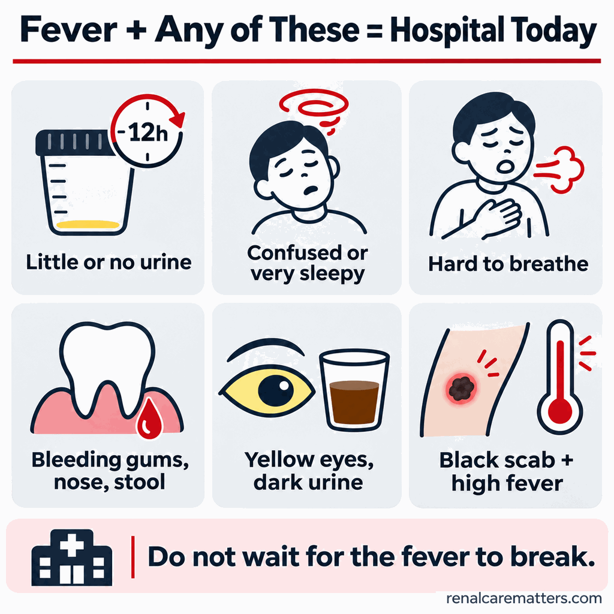
Six warning signs that, together with fever, mean going to a hospital the same day.Anim na babala na, kasabay ng lagnat, ay nangangahulugang pumunta sa ospital sa parehong araw.Unom ka pasidaan nga, uban sa hilanat, nagpasabot nga moadto sa ospital sa samang adlaw.Anam a babala a, kayabe ning lagnat, ing kabaldugan munta king ospital king pareung aldo.
Paalala: draft pa ang salin na ito at hinihintay ang pagsusuri ng katutubong tagapagsalita. Ang Ingles na bersyon ang sinuri.Pahinumdom: draft pa kini nga hubad ug naghulat sa pagsusi sa lumad nga mamumulong. Ang Ingles nga bersyon ang nasusi.Paalala: draft pa ing salin a iti at manaya king pamanigaral ning katutubung manyalita. Ing Ingles a bersyun ing linawe.
Why a fever infection can hurt your kidneysBakit kayang saktan ng impeksyong may lagnat ang iyong batoNganong ang impeksyon nga may hilanat makadaot sa imong batoNung bakit ing impeksyun a atin lagnat makasakit king batu mu
Think of your kidneys as a very busy water-treatment plant. About a fifth of every heartbeat's blood passes through them, and its tiny filters and tubes need a steady blood supply and enough oxygen to work. A severe tropical infection attacks that supply chain from several directions at once.Isipin ang iyong mga bato bilang napaka-abalang planta ng paglilinis ng tubig. Mga ikalimang bahagi ng dugo sa bawat tibok ng puso ang dumaraan dito, at kailangan ng maliliit nitong salaan at tubo ang tuloy-tuloy na daloy ng dugo at sapat na oxygen. Inaatake ng malubhang impeksyon sa tropiko ang daloy na ito mula sa ilang direksyon nang sabay-sabay.Hunahunaa ang imong mga bato isip busy kaayo nga planta sa paglimpyo sa tubig. Mga ikalima nga bahin sa dugo sa matag pitik sa kasingkasing ang moagi niini, ug kinahanglan sa gagmay niining salaan ug tubo ang padayon nga dagan sa dugo ug igo nga oxygen. Ang grabe nga impeksyon sa tropiko moatake niini nga dagan gikan sa pipila ka direksyon dungan.Isipan me deng batu mu antimong maka-abalang planta ning pamaglinis danum. Mga ikalimang bage ning daya king balang tibuk ning pusu ing lalabas keti, at kailangan da reng malating salaan at tubu na ing tuloy-tuloy a daluy ning daya at sapat a oxygen. Atakian ning malalang impeksyun king tropiko ing daluy a iti manibat king pilan a direksyun king pareung oras.
- Not enough fluid reaching the kidney.Kulang ang likidong umaabot sa bato.Kulang ang likido nga moabot sa bato.Kulang ing likidung datang king batu. High fever, sweating, vomiting, and poor eating drain body water. In dengue and leptospirosis, blood vessels also become leaky, so fluid escapes into tissues. Less blood reaches the kidney, and urine output falls.Inuubos ng mataas na lagnat, pagpapawis, pagsusuka, at kawalan ng gana ang tubig sa katawan. Sa dengue at leptospirosis, tumatagas din ang mga ugat, kaya lumalabas ang likido papunta sa tissue. Mas kaunting dugo ang umaabot sa bato, at bumababa ang ihi.Ang taas nga hilanat, singot, suka, ug walay gana mohurot sa tubig sa lawas. Sa dengue ug leptospirosis, motulo usab ang mga ugat, busa mogawas ang likido ngadto sa tissue. Mas diyutay nga dugo ang moabot sa bato, ug mokunhod ang ihi.Ubusan ning matas a lagnat, pamaglagu, pamuta, at alang gana ing danum king katawan. King dengue at leptospirosis, tumagas la murin deng ugat, anya lalabas ing likidu papunta king tissue. Mas kaunting daya ing datang king batu, at bababa ing ihi.
- Low blood pressure and shock.Mababang presyon ng dugo at shock.Ubos nga presyon sa dugo ug shock.Mababang presyun ning daya at shock. When pressure drops, the kidney is one of the first organs to lose its blood flow. The tube cells, which use a great deal of energy, are injured first. Doctors call this acute tubular necrosis (ATN).Kapag bumaba ang presyon, isa ang bato sa mga unang organ na nawawalan ng daloy ng dugo. Ang mga cell ng tubo, na gumagamit ng napakaraming enerhiya, ang unang napipinsala. Tinatawag ito ng doktor na acute tubular necrosis (ATN).Kung mokunhod ang presyon, usa ang bato sa unang mga organ nga mawad-an og dagan sa dugo. Ang mga cell sa tubo, nga mogamit og daghang enerhiya, ang unang madaot. Gitawag kini sa doktor nga acute tubular necrosis (ATN).Nung bumaba ing presyun, metung ya ing batu kareng mumunang organ a mawalan daluy ning daya. Deng cell ning tubu, a gagamit dakal a enerhiya, ing mumunang mapinsala. Aus neng doktor iti acute tubular necrosis (ATN).
- Muscle breakdown and broken red cells.Pagkasira ng kalamnan at pulang selula ng dugo.Pagkaguba sa kaunoran ug pula nga selula sa dugo.Pamagkasira ning laman at pulang selula ning daya. Leptospirosis, dengue, and scrub typhus can break down muscle (rhabdomyolysis); malaria bursts red blood cells. Both release pigments that clog and poison the kidney tubes, which is one reason urine turns dark brown.Kayang sirain ng leptospirosis, dengue, at scrub typhus ang kalamnan (rhabdomyolysis); pinuputok naman ng malaria ang pulang selula ng dugo. Parehong naglalabas ng pigment na bumabara at lumalason sa tubo ng bato, isang dahilan kung bakit nagiging kulay-kape ang ihi.Ang leptospirosis, dengue, ug scrub typhus makaguba sa kaunoran (rhabdomyolysis); ang malaria mobuto sa pula nga selula sa dugo. Parehong mopagawas og pigment nga mobabag ug mohilo sa tubo sa bato, usa ka hinungdan nganong mahimong kolor-kape ang ihi.Asirain ning leptospirosis, dengue, at scrub typhus ing laman (rhabdomyolysis); putukan ne naman ning malaria ing pulang selula ning daya. Parehung maglabas pigment a mamara at mamasama king tubu ning batu, metung a sangkan nung bakit mag-kulay-kape ing ihi.
- Direct inflammation inside the kidney.Direktang pamamaga sa loob ng bato.Direkta nga panghubag sulod sa bato.Direktang pamagbaga king lub ning batu. Some germs, or the immune response against them, inflame the tissue between the tubes (interstitial nephritis) or the tiny blood vessels. This kind of injury can continue even after blood pressure is restored.Ang ilang mikrobyo, o ang tugon ng immune system laban sa kanila, ay nagpapamaga sa tissue sa pagitan ng mga tubo (interstitial nephritis) o sa maliliit na ugat. Maaaring magpatuloy ang ganitong pinsala kahit naibalik na ang presyon ng dugo.Ang pipila ka mikrobyo, o ang tubag sa immune system batok niini, mopahubag sa tissue tali sa mga tubo (interstitial nephritis) o sa gagmay nga ugat. Mahimong magpadayon kini nga kadaot bisan nabalik na ang presyon sa dugo.Deng mikrobyu, o ing tugon ning immune system laban karela, mamabaga king tissue king pagitan dareng tubu (interstitial nephritis) o kareng malating ugat. Malyaring tumuloy ing pinsala a iti agyang mebalik ne ing presyun ning daya.
Usually two or three of these happen together. That is why the treatment is never only "drink more water": the germ must be treated, the blood pressure and fluid balance must be managed carefully, and the kidneys must be watched day by day.Kadalasang dalawa o tatlo sa mga ito ang sabay na nangyayari. Kaya hindi lamang "uminom ng mas maraming tubig" ang gamutan: kailangang gamutin ang mikrobyo, maingat na pamahalaan ang presyon ng dugo at balanse ng likido, at bantayan ang bato araw-araw.Kasagaran duha o tulo niini ang dungan mahitabo. Mao nga dili lang "pag-inom og daghang tubig" ang pagtambal: kinahanglang tambalan ang mikrobyo, amping nga dumalaon ang presyon sa dugo ug balanse sa likido, ug bantayan ang bato adlaw-adlaw.Malimit adwa o atlu kareti ing sabay malyari. Anya e mu "minum dakal a danum" ing pamanulu: kailangan gamutan ing mikrobyu, maingat a pamahalaan ing presyun ning daya at balanse ning likidu, at bantayan ing batu aldo-aldo.
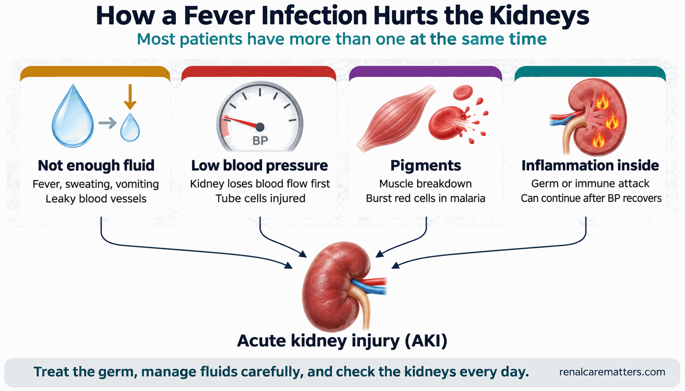
Four overlapping routes to kidney injury in a fever infection: not enough fluid reaching the kidney, low blood pressure, pigments from broken muscle or red cells, and inflammation inside the kidney. Most patients have more than one at the same time.
- ATN
- Acute tubular necrosis
- AKI
- Acute kidney injury
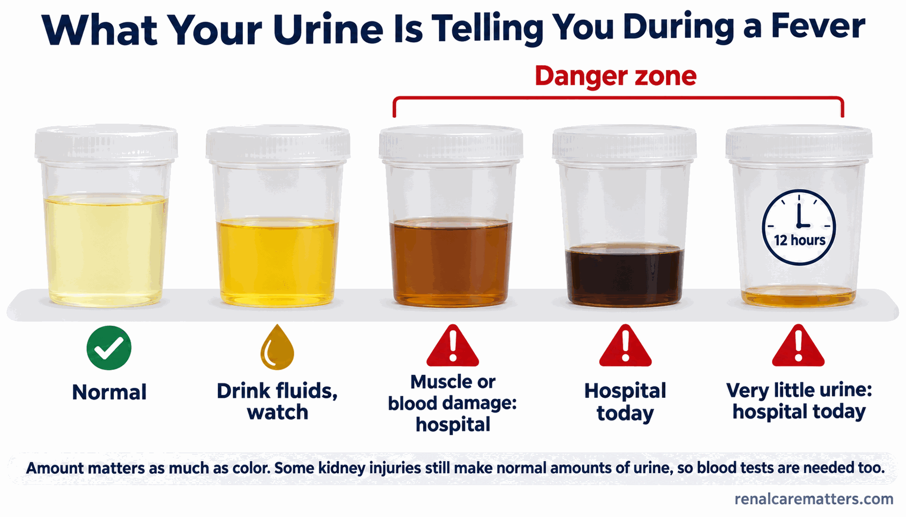
Urine color and amount during a fever. Tea- or cola-colored urine, or very little urine, needs same-day care. Some kidney injuries still make normal amounts, so blood tests matter.Kulay at dami ng ihi habang may lagnat. Ang ihing kulay-tsaa o kulay-cola, o napakakaunting ihi, ay kailangang matingnan sa parehong araw. May pinsala sa bato na normal pa rin ang dami ng ihi, kaya mahalaga ang blood test.Kolor ug gidaghanon sa ihi samtang naay hilanat. Ang ihi nga kolor-tsa o kolor-cola, o diyutay kaayo nga ihi, kinahanglang matan-aw sa samang adlaw. Naay kadaot sa bato nga normal gihapon ang gidaghanon sa ihi, busa importante ang blood test.Kulay at dakal ning ihi kabang atin lagnat. Ing ihing kulay-tsa o kulay-cola, o kakaunting ihi, kailangan lawan king pareung aldo. Atin pinsala king batu a normal ya pa rin ing dakal ning ihi, anya mayalaga ing blood test.
The four infections side by sideAng apat na impeksyon, magkakatabiAng upat ka impeksyon, tupad-tupadDing apat a impeksyun, magkasiping
Each of these infections has a typical way of getting in and a few clues that point to it. None of the clues is perfect, which is why your doctor may test for more than one and may start an antibiotic before every result is back.May karaniwang paraan ng pagpasok at ilang palatandaan ang bawat impeksyon. Walang perpektong palatandaan, kaya maaaring mag-test ang doktor para sa higit sa isa at magsimula ng antibiotic bago lumabas ang lahat ng resulta.Ang matag impeksyon adunay kasagarang paagi sa pagsulod ug pipila ka timailhan. Walay hingpit nga timailhan, mao nga mahimong mag-test ang doktor alang sa labaw sa usa ug magsugod og antibiotic sa dili pa mogawas ang tanang resulta.Atin karaniwang paralan ning pamanyulud at pilan a palatandaan ing balang impeksyun. Alang perpektung palatandaan, anya malyaring mag-test ing doktor para king mas dakal king metung at mumpisang antibiotic bayu lumwal ing eganagang resulta.
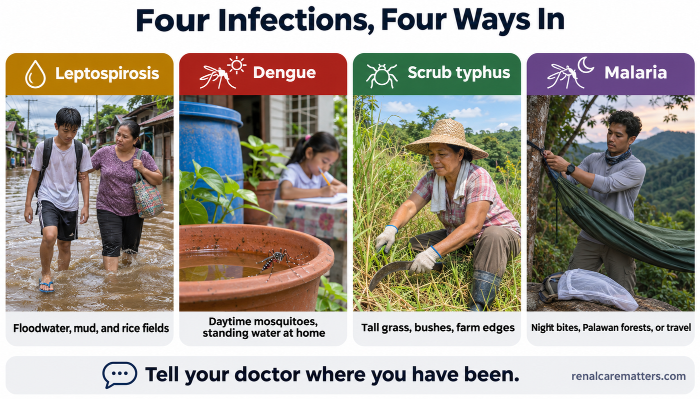
Four everyday ways in: floodwater and mud (leptospirosis), daytime mosquitoes around standing water (dengue), grass and farm edges (scrub typhus), and night mosquitoes in Palawan forests or abroad (malaria).Apat na karaniwang daan: baha at putik (leptospirosis), lamok sa araw malapit sa nakatigil na tubig (dengue), damuhan at gilid ng bukid (scrub typhus), at lamok sa gabi sa gubat ng Palawan o sa ibang bansa (malaria).Upat ka kasagarang agianan: baha ug lapok (leptospirosis), lamok sa adlaw duol sa natigom nga tubig (dengue), sagbutan ug daplin sa uma (scrub typhus), ug lamok sa gabii sa lasang sa Palawan o sa laing nasud (malaria).Apat a karaniwang dalan: albug at pitak (leptospirosis), lamuk king aldo malapit king makatigil a danum (dengue), damuan at gilid ning bukid (scrub typhus), at lamuk king bengi king gubat ning Palawan o king aliwang bansa (malaria).
Leptospirosis
How you get it:Paano nakukuha:Unsaon pagkuha:Makananu mekuwa: floodwater, mud, or rice fields contaminated by rat urine, entering through cuts or eyes.baha, putik, o palayang may ihi ng daga, pumapasok sa sugat o mata.baha, lapok, o humayan nga naay ihi sa ilaga, mosulod sa samad o mata.albug, pitak, o pale a atin ihi ning dagis, lulub king sugat o mata.
Clues:Palatandaan:Timailhan:Palatandaan: severe calf pain, red eyes, yellow eyes; urine may still flow normally even while the kidneys fail.matinding sakit sa binti, mapulang mata, dilaw na mata; maaaring normal pa ang ihi kahit pumapalya na ang bato.grabe nga sakit sa batiis, pula nga mata, dalag nga mata; mahimong normal pa ang ihi bisan nagkapakyas na ang bato.malalang sakit king bitis, malutu a mata, maniyaw a mata; malyaring normal ya pa ing ihi agyang pumalya ne ing batu.
Kidney risk:Panganib sa bato:Peligro sa bato:Panganib king batu: about half of hospitalized patients develop AKI.mga kalahati ng naospital ang nagkakaroon ng AKI.mga katunga sa naospital ang maka-AKI.mga kalahati dareng meospital ing magka-AKI.
Dengue
How you get it:Paano nakukuha:Unsaon pagkuha:Makananu mekuwa: daytime bites of Aedes mosquitoes, in cities and towns.kagat ng lamok na Aedes sa araw, sa lungsod at bayan.paak sa lamok nga Aedes sa adlaw, sa siyudad ug lungsod.kagat ning lamuk a Aedes king aldo, king siudad at balen.
Clues:Palatandaan:Timailhan:Palatandaan: pain behind the eyes, rash, falling platelets; the danger days are often after the fever breaks.sakit sa likod ng mata, pantal, bumababang platelet; madalas na mapanganib na araw ay pagkatapos bumaba ang lagnat.sakit sa luyo sa mata, pantal, nagkunhod nga platelet; ang peligrosong adlaw kasagaran human mohubas ang hilanat.sakit king likud ning mata, pantal, bababang platelet; ing mapanganib a aldo malimit kaibat bumaba ing lagnat.
Kidney risk:Panganib sa bato:Peligro sa bato:Panganib king batu: highest in severe dengue; diabetes and existing kidney disease may add risk.pinakamataas sa malubhang dengue; maaaring dagdagan ng diabetes at dati nang sakit sa bato ang panganib.labing taas sa grabe nga dengue; ang diabetes ug sakit na sa bato mahimong modugang sa peligro.pekamatas king malalang dengue; ing diabetes at atin ng sakit king batu malyaring dagdagan ing panganib.
Full dengue guide →Buong gabay sa dengue →Tibuok giya sa dengue →Buung gabay king dengue →
Scrub typhusScrub typhusScrub typhusScrub typhus
How you get it:Paano nakukuha:Unsaon pagkuha:Makananu mekuwa: bite of a tiny mite larva (chigger) in grass, bushes, farm edges, or forest clearings.kagat ng maliit na larva ng hanip (chigger) sa damuhan, palumpong, gilid ng bukid, o kagubatan.paak sa gamay nga larva sa hanip (chigger) sa sagbutan, kakahoyan, daplin sa uma, o lasang.kagat ning malating larva ning hanip (chigger) king damuan, palumpung, gilid ning bukid, o gubat.
Clues:Palatandaan:Timailhan:Palatandaan: a painless black scab (eschar), often hidden in skin folds; headache, cough, swollen glands.walang-sakit na itim na langib (eschar), madalas nakatago sa tupi ng balat; sakit ng ulo, ubo, namamagang kulani.walay sakit nga itom nga langib (eschar), kasagaran natago sa pilo sa panit; sakit sa ulo, ubo, nanghubag nga kulani.alang sakit a maitim a langib (eschar), malimit makasalikut king tupi ning balat; sakit ning buntuk, uku, mamagbaga a kulani.
Kidney risk:Panganib sa bato:Peligro sa bato:Panganib king batu: roughly 1 in 5 to 1 in 2 hospitalized patients.mga 1 sa 5 hanggang 1 sa 2 naospital.mga 1 sa 5 hangtod 1 sa 2 naospital.mga 1 king 5 anggang 1 king 2 meospital.
Read below ↓Basahin sa ibaba ↓Basaha sa ubos ↓Basan king lalam ↓
Malaria
How you get it:Paano nakukuha:Unsaon pagkuha:Makananu mekuwa: night bites of Anopheles mosquitoes in forest or foothill areas; in the Philippines now mostly in Palawan, or after travel.kagat ng lamok na Anopheles sa gabi sa gubat o paanan ng bundok; sa Pilipinas ngayon ay karamihan sa Palawan, o pagkatapos ng biyahe.paak sa lamok nga Anopheles sa gabii sa lasang o tiilan sa bukid; sa Pilipinas karon kasagaran sa Palawan, o human sa biyahe.kagat ning lamuk a Anopheles king bengi king gubat o paldas ning bunduk; king Pilipinas ngeni kayakaldan king Palawan, o kaibat ning biyahe.
Clues:Palatandaan:Timailhan:Palatandaan: chills and fever that come in waves, pale skin, dark urine.panginginig at lagnat na paulit-ulit, maputlang balat, maitim na ihi.katugnaw ug hilanat nga balik-balik, luspad nga panit, itom nga ihi.pamangatal at lagnat a balik-balik, malapsi a balat, maitim a ihi.
Kidney risk:Panganib sa bato:Peligro sa bato:Panganib king batu: about 1 in 4 adults with malaria in reported studies; higher in severe malaria.mga 1 sa 4 na adult na may malaria sa mga pag-aaral; mas mataas sa malubhang malaria.mga 1 sa 4 ka hamtong nga may malaria sa mga pagtuon; mas taas sa grabe nga malaria.mga 1 king 4 a matwang atin malaria kareng pag-aral; mas matas king malalang malaria.
Read below ↓Basahin sa ibaba ↓Basaha sa ubos ↓Basan king lalam ↓
Other causes doctors also checkIba pang dahilang sinusuri rin ng doktorUbang hinungdan nga gisusi usab sa doktorAliwang sangkan a susuyuran murin ning doktor
Bacterial blood infection (sepsis), hantavirus from rat droppings, typhoid, and kidney injury from medicines, especially pain relievers such as mefenamic acid or ibuprofen taken during the fever. Bring every medicine and herbal product you took to the hospital.Impeksyon ng bacteria sa dugo (sepsis), hantavirus mula sa dumi ng daga, tipus, at pinsala sa bato mula sa gamot, lalo na ang pain reliever gaya ng mefenamic acid o ibuprofen na ininom habang may lagnat. Dalhin sa ospital ang lahat ng gamot at herbal na ininom.Impeksyon sa bacteria sa dugo (sepsis), hantavirus gikan sa tai sa ilaga, tipos, ug kadaot sa bato gikan sa tambal, labi na ang pain reliever sama sa mefenamic acid o ibuprofen nga giinom samtang naay hilanat. Dad-a sa ospital ang tanang tambal ug herbal nga giinom.Impeksyun ning bacteria king daya (sepsis), hantavirus manibat king tai ning dagis, tipus, at pinsala king batu manibat king gamut, lalu na ing pain reliever antimo ing mefenamic acid o ibuprofen a ininum kabang atin lagnat. Darandam king ospital ing eganagang gamut at herbal a ininum.
What to tell the doctor in the first five minutesAno ang sasabihin sa doktor sa unang limang minutoUnsay isulti sa doktor sa unang lima ka minutoNanu ing sabyan king doktor king mumunang limang minutu
Blood tests for these infections can take days, and early tests are often negative. Your story is the fastest test there is. Before the hospital visit, or while waiting, write down the answers to these questions for the past three weeks.Maaaring abutin ng ilang araw ang blood test para sa mga impeksyong ito, at madalas negatibo ang maagang test. Ang kuwento mo ang pinakamabilis na test. Bago pumunta sa ospital, o habang naghihintay, isulat ang sagot sa mga tanong na ito para sa nakaraang tatlong linggo.Ang blood test alang niini nga impeksyon mahimong moabot og pipila ka adlaw, ug kasagaran negatibo ang sayo nga test. Ang imong istorya ang pinakapaspas nga test. Sa dili pa moadto sa ospital, o samtang naghulat, isulat ang tubag niini nga mga pangutana alang sa milabay nga tulo ka semana.Malyaring abutan pilan aldo ing blood test para kareng impeksyun a reti, at malimit negatibu ing maagang test. Ing kuwentu mu ing pekamabilis a test. Bayu ka munta king ospital, o kabang manaya ka, isulat me ing sagot kareng kutang a reti para king milabas a atlung dominggu.
- Did you wade in floodwater, clean a flooded house, or work in a rice field or canal?Lumusong ka ba sa baha, naglinis ng binahang bahay, o nagtrabaho sa palayan o kanal?Nilusong ka ba sa baha, naglimpyo sa nabahang balay, o nagtrabaho sa humayan o kanal?Linusung ka ba king albug, linisan me ing beng albug a bale, o mekiobra ka king pale o kanal?
- Did you walk, farm, hike, or camp in grass, bushes, or forest edges? Military training areas count too.Naglakad, nagsaka, nag-hike, o nag-camp ka ba sa damuhan, palumpong, o gilid ng gubat? Kasama rin ang training area ng militar.Naglakaw, nag-uma, nag-hike, o nag-camp ka ba sa sagbutan, kakahoyan, o daplin sa lasang? Apil usab ang training area sa militar.Mamalakad, magsaka, mag-hike, o mag-camp ka ba king damuan, palumpung, o gilid ning gubat? Kayabe murin ing training area ning militar.
- Did you stay overnight in Palawan's forests or foothills, or travel to Africa, South Asia, or another malaria country?Natulog ka ba sa gubat o paanan ng bundok sa Palawan, o bumiyahe sa Africa, South Asia, o ibang bansang may malaria?Natulog ka ba sa lasang o tiilan sa bukid sa Palawan, o nibiyahe sa Africa, South Asia, o laing nasud nga may malaria?Tinudtud ka ba king gubat o paldas ning bunduk king Palawan, o binyahe king Africa, South Asia, o aliwang bansang atin malaria?
- Is anyone at home or in the neighborhood sick with dengue?May kasama ba sa bahay o kapitbahay na may dengue?Naa bay kauban sa balay o silingan nga may dengue?Atin ba kayabe king bale o kapitbale a atin dengue?
- Did you see rats or rat droppings where you sleep or work?May nakita ka bang daga o dumi ng daga kung saan ka natutulog o nagtatrabaho?Naa ba kay nakitang ilaga o tai sa ilaga diin ka matulog o motrabaho?Atin ka bang akit a dagis o tai ning dagis nung nukarin ka matudtud o maobra?
- Which medicines, pain relievers, antibiotics, or herbal products did you take, and how much?Anong gamot, pain reliever, antibiotic, o herbal ang ininom mo, at gaano karami?Unsang tambal, pain reliever, antibiotic, o herbal ang imong giinom, ug pila?Nanung gamut, pain reliever, antibiotic, o herbal ing ininum mu, at makananu kadakal?
- Do you already have kidney disease, diabetes, high blood pressure, or are you pregnant?May sakit ka na ba sa bato, diabetes, altapresyon, o buntis ka ba?Naa na ba kay sakit sa bato, diabetes, taas nga presyon, o buntis ka ba?Atin ka na bang sakit king batu, diabetes, altapresyun, o mabuktut ka ba?
Scrub typhus: the infection behind the hidden black scabScrub typhus: ang impeksyon sa likod ng nakatagong itim na langibScrub typhus: ang impeksyon luyo sa natagong itom nga langibScrub typhus: ing impeksyun king likud ning makasalikut a maitim a langib
Scrub typhus is caused by a bacterium called Orientia tsutsugamushi. It lives inside tiny mites. Only the larval stage, called a chigger, bites people, usually where grass, bushes, and farmland meet. The bite is painless, so most people never notice it.Ang scrub typhus ay dulot ng bacteria na tinatawag na Orientia tsutsugamushi. Nabubuhay ito sa loob ng maliliit na hanip. Ang larva lamang, na tinatawag na chigger, ang kumakagat sa tao, karaniwan kung saan nagtatagpo ang damo, palumpong, at bukid. Walang sakit ang kagat, kaya hindi ito napapansin ng karamihan.Ang scrub typhus hinungdan sa bacteria nga gitawag og Orientia tsutsugamushi. Nagpuyo kini sulod sa gagmay nga hanip. Ang larva lang, nga gitawag og chigger, ang mopaak sa tawo, kasagaran diin magtagbo ang sagbot, kakahoyan, ug uma. Walay sakit ang paak, busa wala kini mamatikdi sa kadaghanan.Ing scrub typhus sangkan ning bacteria a aus dang Orientia tsutsugamushi. Mabibye ya king lub dareng malating hanip. Ing larva mu, a aus dang chigger, ing kakagat tau, karaniwan nung nu la misasabat ing dikut, palumpung, at bukid. Alang sakit ing kagat, anya e ne pansinan ning kayakaldan.
It is common across the so-called tsutsugamushi triangle, a region of the Asia-Pacific that includes the Philippines, and it causes an estimated one million illnesses a year. In Central Luzon, surveillance during the 2024–2025 Balikatan exercises found chiggers carrying rickettsial germs at Clark Air Base, rising risk at Fort Magsaysay, and an emerging scrub typhus risk at Camp Aquino. Scrub typhus is rarely tested for in Philippine hospitals, so it is almost certainly under-recognized here.Karaniwan ito sa tinatawag na tsutsugamushi triangle, isang rehiyon sa Asia-Pacific na kasama ang Pilipinas, at tinatayang nagdudulot ito ng isang milyong sakit bawat taon. Sa Central Luzon, nakita sa pagsusuri noong Balikatan 2024–2025 ang mga chigger na may rickettsial na mikrobyo sa Clark Air Base, tumataas na panganib sa Fort Magsaysay, at bagong panganib ng scrub typhus sa Camp Aquino. Bihirang i-test ang scrub typhus sa mga ospital sa Pilipinas, kaya halos tiyak na hindi ito gaanong nakikilala rito.Kasagaran kini sa gitawag nga tsutsugamushi triangle, usa ka rehiyon sa Asia-Pacific nga apil ang Pilipinas, ug gibanabana nga hinungdan kini sa usa ka milyon ka sakit matag tuig. Sa Central Luzon, nakit-an sa pagsusi panahon sa Balikatan 2024–2025 ang mga chigger nga may rickettsial nga mikrobyo sa Clark Air Base, nagkataas nga peligro sa Fort Magsaysay, ug bag-ong peligro sa scrub typhus sa Camp Aquino. Talagsa ra i-test ang scrub typhus sa mga ospital sa Pilipinas, busa hapit sigurado nga dili kini kaayo mailhan dinhi.Karaniwan ya iti king aus dang tsutsugamushi triangle, metung a rehiyun king Asia-Pacific a kayabe ing Pilipinas, at tinantyang mamye ya metung a milyung sakit balang banwa. King Central Luzon, akit king pamanigaral kapamilatan ning Balikatan 2024–2025 deng chigger a atin rickettsial a mikrobyu king Clark Air Base, tutuknang panganib king Fort Magsaysay, at bayung panganib ning scrub typhus king Camp Aquino. Bihira ilang i-test ing scrub typhus kareng ospital king Pilipinas, anya halos siguradu a e ya masyadung akikilala keni.
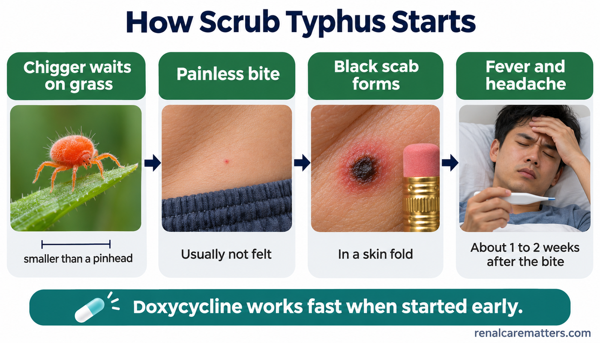
A chigger smaller than a pinhead bites without pain, a black scab forms, and fever starts about one to two weeks later.Ang chigger na mas maliit pa sa ulo ng aspili ay kumakagat nang walang sakit, nagkakaroon ng itim na langib, at nagsisimula ang lagnat mga isa hanggang dalawang linggo pagkatapos.Ang chigger nga mas gamay pa sa ulo sa aspile mopaak nga walay sakit, motungha ang itom nga langib, ug magsugod ang hilanat mga usa hangtod duha ka semana human.Ing chigger a mas malati pa king buntuk ning aspili kakagat a alang sakit, atin lumwal a maitim a langib, at mumpisa ing lagnat mga metung anggang adwang dominggu kaibat.
Look for the escharHanapin ang escharPangitaa ang escharPanintunan ing eschar
About a week after the bite, a small sore appears where the chigger fed. It becomes a painless, round black scab with a red rim, usually 5 to 20 millimeters wide. It does not itch much and does not hurt, so it is easy to miss. Chiggers prefer warm, moist, tight places. Check:Mga isang linggo pagkatapos ng kagat, may lumilitaw na maliit na sugat kung saan kumagat ang chigger. Nagiging walang-sakit, bilog na itim na langib ito na may pulang gilid, karaniwang 5 hanggang 20 milimetro ang lapad. Hindi gaanong makati at hindi masakit, kaya madaling makaligtaan. Gusto ng chigger ang mainit, mamasa-masa, at masikip na bahagi. Tingnan ang:Mga usa ka semana human sa paak, motungha ang gamay nga samad diin mipaak ang chigger. Mahimo kining walay sakit, lingin nga itom nga langib nga may pula nga ngilit, kasagaran 5 hangtod 20 milimetro ang gilapdon. Dili kaayo makatol ug dili sakit, busa dali ra malingkawan. Ganahan ang chigger sa init, basa-basa, ug hugot nga bahin. Tan-awa ang:Mga metung a dominggu kaibat ning kagat, atin lumitaw a malating sugat nung nu ya kinagat ing chigger. Magin alang sakit, bilug a maitim a langib ya iti a atin malutung gilid, karaniwan 5 anggang 20 milimetru ing lapad. E masyadung makatel at e masakit, anya madali yang makaligtaan. Buri ning chigger ing mapali, mabasa-basa, at masikip a bage. Lawan ya ing:
- armpits and the sides of the chestkilikili at tagiliran ng dibdibilok ug kilid sa dughankilikili at siping ning salu
- groin, genitals, and buttock foldssingit, ari, at tupi ng puwitsingit, kinatawo, ug pilo sa sampotsingit, ari, at tupi ning pwit
- waistband and belt line, under the bra or underwear elasticbaywang at linya ng sinturon, sa ilalim ng bra o garter ng damit-panloobhawak ug linya sa bakos, ilawom sa bra o garter sa sinina-sulodawak at linya ning sinturun, king lalam ning bra o garter ning sinulud
- behind the ears, the neck, and the back of the kneeslikod ng tainga, leeg, at likod ng tuhodluyo sa dalunggan, liog, ug luyo sa tuhodlikud ning balugbug, batal, at likud ning bitis
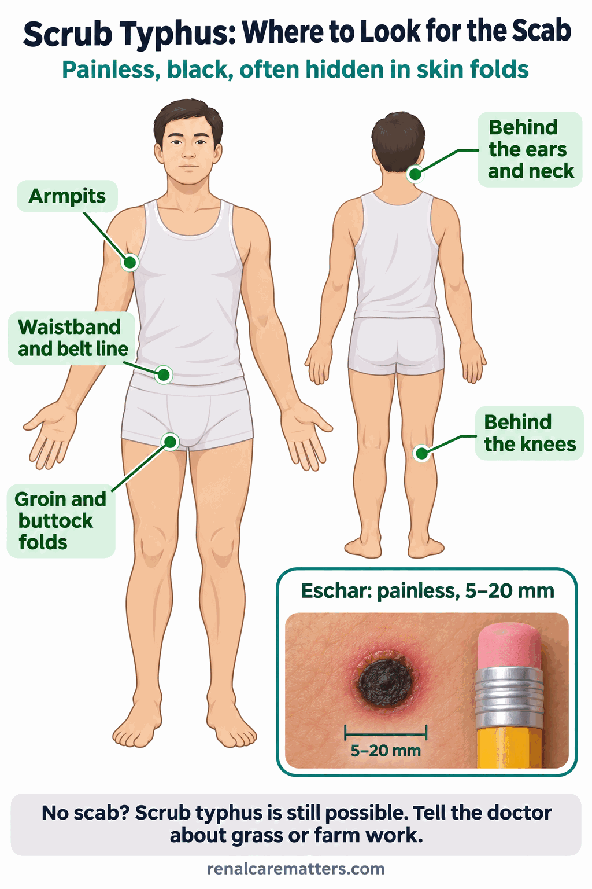
Where to look for an eschar. The scab is painless and often hidden in skin folds, so ask the doctor to check the armpits, groin, waistline, behind the ears, and behind the knees. Many patients with scrub typhus have no eschar at all, so a missing scab does not rule it out.
An eschar is a strong clue, but in one large Indian hospital series only about half of patients had one. Fever, headache, body pain, cough, swollen lymph nodes, and sometimes a faint rash are the other common signs.Malakas na palatandaan ang eschar, pero sa isang malaking pag-aaral sa ospital sa India, mga kalahati lamang ng pasyente ang mayroon nito. Lagnat, sakit ng ulo, pananakit ng katawan, ubo, namamagang kulani, at minsan ay mahinang pantal ang iba pang karaniwang senyales.Kusgan nga timailhan ang eschar, apan sa usa ka dakong pagtuon sa ospital sa India, mga katunga lang sa pasyente ang naa niini. Hilanat, sakit sa ulo, sakit sa lawas, ubo, nanghubag nga kulani, ug usahay hinay nga pantal ang ubang kasagarang timailhan.Masikan a palatandaan ing eschar, pero king metung a maragul a pag-aral king ospital king India, mga kalahati mu dareng pasyente ing atin keti. Lagnat, sakit ning buntuk, sakit ning katawan, uku, mamagbaga a kulani, at kekatamu malambut a pantal ing aliwang karaniwang senyales.
What it does to the kidneysAno ang epekto nito sa batoUnsay epekto niini sa batoNanu ing epektu na king batu
Kidney injury develops in roughly 18% to 53% of hospitalized patients, and about 5% to 10% need dialysis. The germ infects the lining of small blood vessels throughout the body, so the kidney is hurt by low blood pressure, leaky vessels, muscle breakdown, and inflammation inside the kidney tissue, often together with lung, liver, heart, or brain involvement.Nagkakaroon ng pinsala sa bato ang mga 18% hanggang 53% ng naospital, at mga 5% hanggang 10% ang nangangailangan ng dialysis. Inaatake ng mikrobyo ang panloob na bahagi ng maliliit na ugat sa buong katawan, kaya napipinsala ang bato ng mababang presyon, tumatagas na ugat, pagkasira ng kalamnan, at pamamaga sa loob ng bato, madalas kasabay ng baga, atay, puso, o utak.Maka-kadaot sa bato ang mga 18% hangtod 53% sa naospital, ug mga 5% hangtod 10% ang nagkinahanglan og dialysis. Gi-atake sa mikrobyo ang sulod nga bahin sa gagmay nga ugat sa tibuok lawas, busa madaot ang bato tungod sa ubos nga presyon, nagtulo nga ugat, pagkaguba sa kaunoran, ug panghubag sulod sa bato, kasagaran uban sa baga, atay, kasingkasing, o utok.Magkaroon pinsala king batu ing mga 18% anggang 53% dareng meospital, at mga 5% anggang 10% ing mangailangan dialysis. Atakian ning mikrobyu ing lub dareng malating ugat king entirung katawan, anya mapinsala ing batu uli ning mababang presyun, tumagas a ugat, pamagkasira ning laman, at pamagbaga king lub ning batu, malimit kayabe ing baga, atay, pusu, o utak.
The good news: cheap antibiotics work fastMagandang balita: mabilis gumana ang murang antibioticMaayong balita: paspas molihok ang barato nga antibioticMayap a balita: mabilis gumana ing mura a antibiotic
Doxycycline usually brings the fever down within one to two days. Azithromycin is the usual choice in pregnancy and is also used in children. For very sick patients, a 2023 trial of 794 adults in India found that giving both drugs by vein worked better than either one alone. Neither drug needs a dose change for weak kidneys. Never stop early just because the fever is gone; finish the course your doctor prescribed.Karaniwang pinabababa ng doxycycline ang lagnat sa loob ng isa hanggang dalawang araw. Azithromycin ang karaniwang pinipili sa pagbubuntis at ginagamit din sa mga bata. Para sa napakalubhang pasyente, nakita ng isang pag-aaral noong 2023 sa 794 na adult sa India na mas mabisa ang pagbibigay ng parehong gamot sa ugat kaysa isa lamang. Hindi kailangang baguhin ang dosis ng alinman para sa mahinang bato. Huwag itigil nang maaga dahil lamang nawala ang lagnat; tapusin ang gamutang inireseta ng doktor.Kasagaran ipaubos sa doxycycline ang hilanat sulod sa usa hangtod duha ka adlaw. Azithromycin ang kasagarang pilion sa pagmabdos ug gigamit usab sa mga bata. Alang sa grabe kaayo nga pasyente, nakit-an sa usa ka pagtuon niadtong 2023 sa 794 ka hamtong sa India nga mas epektibo ang paghatag sa duha ka tambal sa ugat kaysa usa lang. Dili kinahanglang usbon ang dosis sa bisan asa alang sa huyang nga bato. Ayaw hunonga og sayo tungod lang nawala ang hilanat; humana ang pagtambal nga gireseta sa doktor.Karaniwan pababan ning doxycycline ing lagnat king lub ning metung anggang adwang aldo. Azithromycin ing karaniwang pipiliin king pamagbuktut at gagamitan murin kareng anak. Para king malalang pasyente, akit ning metung a pag-aral kaniting 2023 king 794 a matwa king India a mas epektibu ing pamamye parehu gamut king ugat kesa metung mu. E kailangan baguan ing dosis nanuman kareti para king malambut a batu. E mu itigil a maaga uli mu ta mewala ne ing lagnat; payarian me ing pamanulung inireseta ning doktor.
Malaria: rare now in most of the country, but still dangerousMalaria: bihira na sa karamihan ng bansa, pero mapanganib pa rinMalaria: talagsa na sa kadaghanan sa nasud, apan peligroso gihaponMalaria: bihira ne king kayakaldan ning bansa, pero mapanganib ya pa rin
Malaria is caused by Plasmodium parasites carried by night-biting Anopheles mosquitoes. The Department of Health (DOH) reports that every Philippine province except Palawan is now malaria-free or has no locally acquired cases, with Palawan accounting for most remaining cases, mainly in its southern forest and foothill areas. Palawan also has a monkey malaria, Plasmodium knowlesi, carried from long-tailed macaques; it multiplies every 24 hours and can become severe quickly.Ang malaria ay dulot ng parasitong Plasmodium na dala ng lamok na Anopheles na kumakagat sa gabi. Ayon sa Department of Health (DOH), malaria-free na o walang lokal na kaso ang bawat probinsya sa Pilipinas maliban sa Palawan, kung saan nagmumula ang karamihan ng natitirang kaso, lalo na sa gubat at paanan ng bundok sa timog nito. May malaria rin ng unggoy sa Palawan, ang Plasmodium knowlesi, mula sa mga unggoy na mahaba ang buntot; dumarami ito tuwing 24 oras at mabilis lumubha.Ang malaria hinungdan sa parasito nga Plasmodium nga gidala sa lamok nga Anopheles nga mopaak sa gabii. Sumala sa Department of Health (DOH), malaria-free na o walay lokal nga kaso ang matag probinsya sa Pilipinas gawas sa Palawan, diin gikan ang kadaghanan sa nahabilin nga kaso, labi na sa lasang ug tiilan sa bukid sa habagatan niini. Naa usab malaria sa unggoy sa Palawan, ang Plasmodium knowlesi, gikan sa mga unggoy nga taas og ikog; modaghan kini matag 24 ka oras ug paspas mograbe.Ing malaria sangkan ning parasitung Plasmodium a dala ning lamuk a Anopheles a kakagat king bengi. Agpang king Department of Health (DOH), malaria-free ne o alang lokal a kasu ing balang probinsya king Pilipinas liban king Palawan, nung nu manibat ing kayakaldan dareng mabilin a kasu, lalu na king gubat at paldas ning bunduk king timug na. Atin murin malaria ning matsing king Palawan, ing Plasmodium knowlesi, manibat kareng matsing a malaba ing ikul; dakal ya balang 24 oras at mabilis lumala.
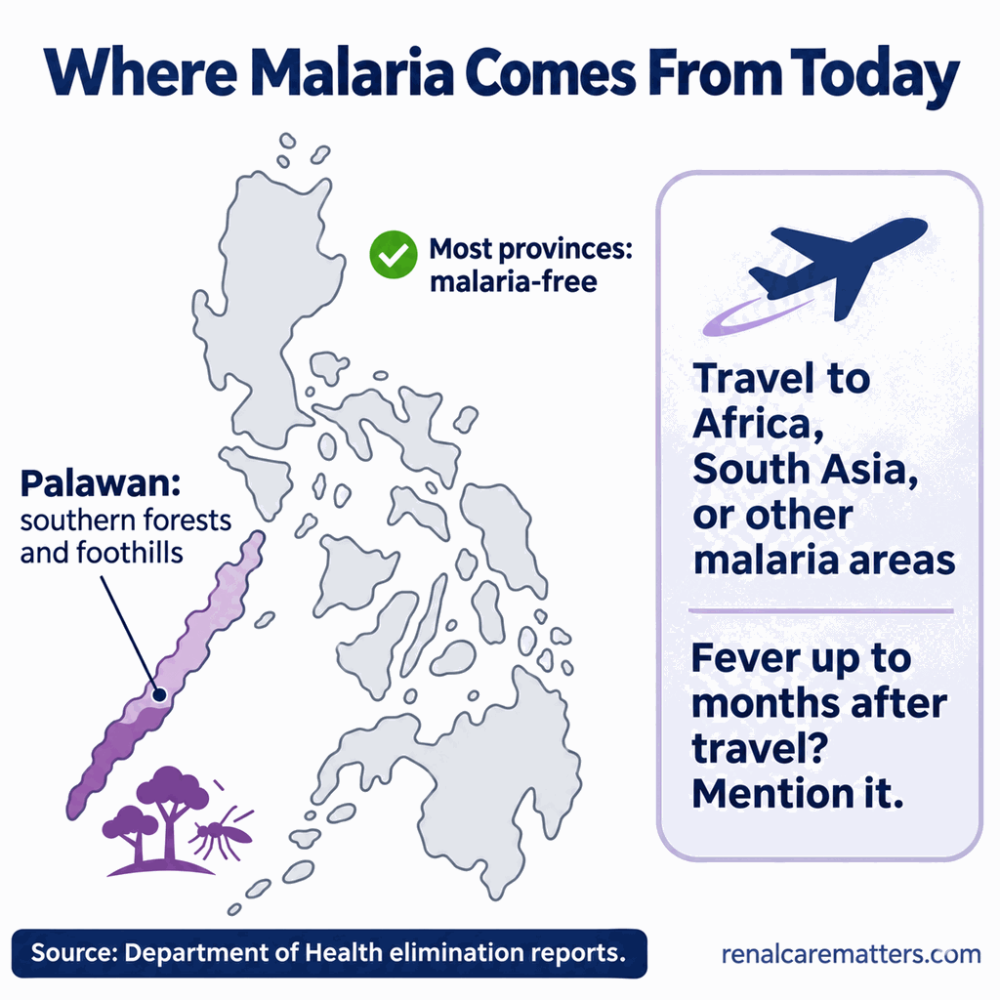
Schematic, not a precise map. Most Philippine provinces are malaria-free; remaining local cases are mainly in southern Palawan, and travel abroad is the other common source.Eskematiko, hindi eksaktong mapa. Malaria-free ang karamihan ng probinsya; ang natitirang lokal na kaso ay karamihan sa timog Palawan, at ang biyahe sa ibang bansa ang isa pang karaniwang pinagmumulan.Eskematiko, dili eksakto nga mapa. Malaria-free ang kadaghanan sa probinsya; ang nahabiling lokal nga kaso kasagaran sa habagatang Palawan, ug ang biyahe sa laing nasud ang laing kasagarang gigikanan.Eskematiku, ali eksaktung mapa. Malaria-free ing kayakaldan dareng probinsya; ding mabilin a lokal a kasu kayakaldan king timug Palawan, at ing biyahe king aliwang bansa ing aliwang karaniwang pikuanan.
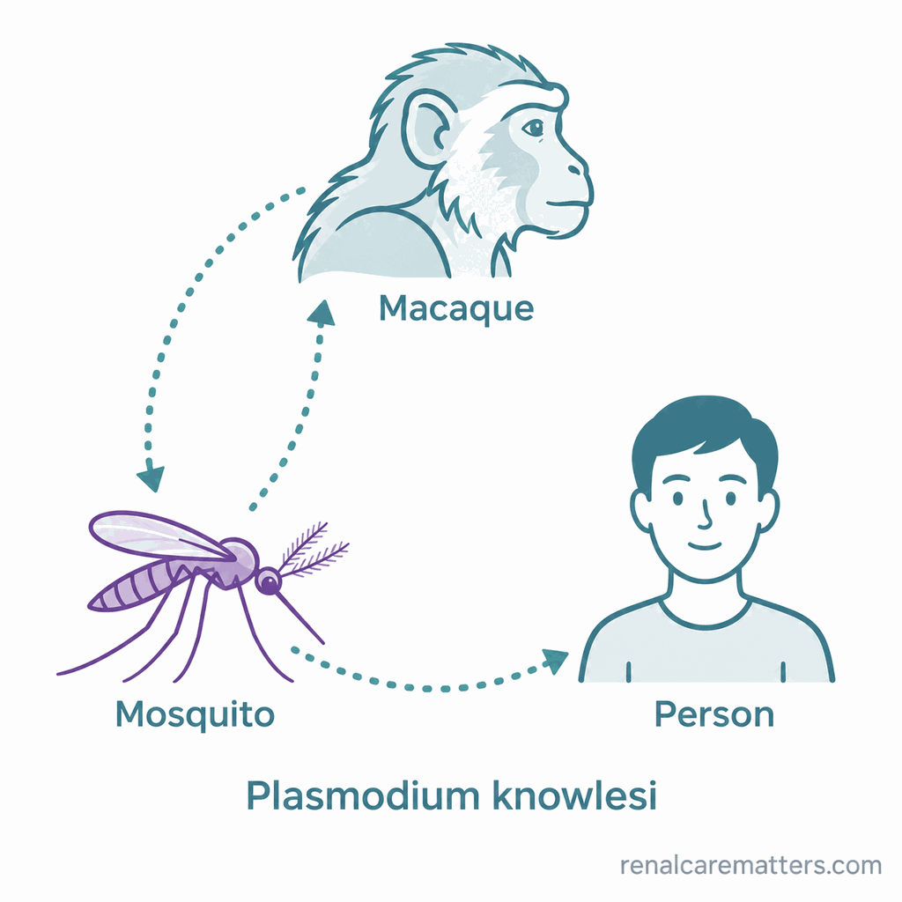
Plasmodium knowlesi passes from long-tailed macaques to people through mosquitoes.Ang Plasmodium knowlesi ay naipapasa mula sa unggoy na mahaba ang buntot papunta sa tao sa pamamagitan ng lamok.Ang Plasmodium knowlesi mapasa gikan sa unggoy nga taas og ikog ngadto sa tawo pinaagi sa lamok.Ing Plasmodium knowlesi mipasa manibat kareng matsing a malaba ing ikul papunta king tau king pamamagitan ning lamuk.
How malaria hurts the kidneyPaano pinipinsala ng malaria ang batoUnsaon pagdaot sa malaria sa batoMakananu pinsalan ning malaria ing batu
The parasite lives inside red blood cells. In the most dangerous species, infected cells become sticky and jam the smallest blood vessels, including those of the kidney. Huge numbers of red cells also burst, releasing free hemoglobin that damages kidney tube cells. In some patients the urine turns black or cola-colored, a picture once called blackwater fever. In reported studies, about one in four adults with malaria develops kidney injury, and the rate is far higher in severe malaria.Nabubuhay ang parasito sa loob ng pulang selula ng dugo. Sa pinakamapanganib na uri, nagiging malagkit ang mga infected na selula at bumabara sa pinakamaliliit na ugat, kasama ang sa bato. Napakaraming pulang selula rin ang pumuputok, naglalabas ng hemoglobin na pumipinsala sa tubo ng bato. Sa ilang pasyente, nagiging itim o kulay-cola ang ihi, na dating tinawag na blackwater fever. Sa mga pag-aaral, mga isa sa apat na adult na may malaria ang nagkakaroon ng pinsala sa bato, at mas mataas pa sa malubhang malaria.Nagpuyo ang parasito sulod sa pula nga selula sa dugo. Sa labing peligroso nga matang, mahimong pilit ang mga infected nga selula ug mobabag sa labing gagmay nga ugat, apil ang sa bato. Daghan kaayo usab nga pula nga selula ang mobuto, mopagawas og hemoglobin nga modaot sa tubo sa bato. Sa pipila ka pasyente, mahimong itom o kolor-cola ang ihi, nga kaniadto gitawag og blackwater fever. Sa mga pagtuon, mga usa sa upat ka hamtong nga may malaria ang maka-kadaot sa bato, ug mas taas pa sa grabe nga malaria.Mabibye ya ing parasitu king lub ning pulang selula ning daya. King pekamapanganib a klasi, magin malagkit la deng infected a selula at mamara kareng pekamalating ugat, kayabe ing king batu. Dakal a pulang selula murin ing pumutuk, maglabas hemoglobin a mamapinsala king tubu ning batu. King aliwang pasyente, magin maitim o kulay-cola ing ihi, a dati aus dang blackwater fever. Kareng pag-aral, mga metung king apat a matwang atin malaria ing magkaroon pinsala king batu, at mas matas pa king malalang malaria.
Treatment happens in the hospitalSa ospital ginagawa ang gamutanSa ospital himoon ang pagtambalKing ospital gagawan ing pamanulu
Severe malaria is treated with artesunate injections, recommended first by the World Health Organization (WHO) for adults, children, and pregnant women. It does not need a dose change for kidney failure or dialysis. After at least 24 hours, and once you can swallow, you finish with three days of tablets. Because some red cells are cleared slowly after artesunate, your doctor will check your blood count again during the weeks after discharge.Ginagamot ang malubhang malaria ng iniksyong artesunate, na unang inirerekomenda ng World Health Organization (WHO) para sa adult, bata, at buntis. Hindi kailangang baguhin ang dosis para sa kidney failure o dialysis. Pagkatapos ng hindi bababa sa 24 oras, at kapag nakakalunok na, tatapusin ito ng tatlong araw na tableta. Dahil mabagal maalis ang ilang pulang selula pagkatapos ng artesunate, muling susuriin ng doktor ang iyong blood count sa mga linggo pagkatapos makauwi.Gitambalan ang grabe nga malaria sa indyeksyon nga artesunate, nga unang girekomenda sa World Health Organization (WHO) alang sa hamtong, bata, ug buntis. Dili kinahanglang usbon ang dosis alang sa kidney failure o dialysis. Human sa dili moubos sa 24 ka oras, ug kung makatulon na, humanon kini sa tulo ka adlaw nga tableta. Tungod kay hinay matangtang ang pipila ka pula nga selula human sa artesunate, susihon pag-usab sa doktor ang imong blood count sa mga semana human makapauli.Gamutan ing malalang malaria ning iniksyung artesunate, a mumunang irekomenda ning World Health Organization (WHO) para king matwa, anak, at mabuktut. E kailangan baguan ing dosis para king kidney failure o dialysis. Kaibat ning e bababa king 24 oras, at nung makalamun ka na, payarian ya iti ning atlung aldo a tableta. Uli ta mabagal mawala ing aliwang pulang selula kaibat ning artesunate, susuyuran neng pasibayu ning doktor ing blood count mu kareng dominggu kaibat mung muli.
Lowering your riskPagbabawas ng iyong panganibPagpakunhod sa imong peligroPamababa ning panganib mu
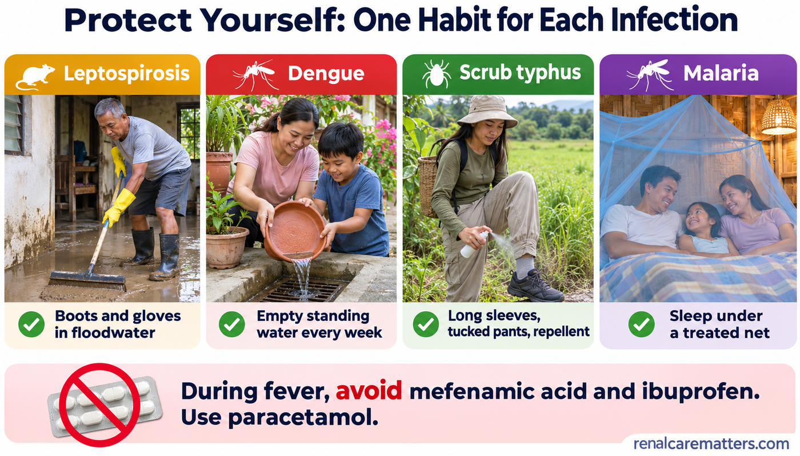
One protective habit for each infection, and one rule for any fever: avoid mefenamic acid and ibuprofen.Isang proteksyong gawi para sa bawat impeksyon, at isang patakaran sa anumang lagnat: iwasan ang mefenamic acid at ibuprofen.Usa ka panalipod nga batasan alang sa matag impeksyon, ug usa ka lagda sa bisan unsang hilanat: likayi ang mefenamic acid ug ibuprofen.Metung a proteksyung ugali para king balang impeksyun, at metung a patakaran king nanumang lagnat: likwasan ing mefenamic acid at ibuprofen.
| InfectionImpeksyonImpeksyonImpeksyun | What helps mostPinakamakatulongLabing makatabangPekamakasaup |
|---|---|
| Leptospirosis | Boots and gloves in floodwater and mud; cover cuts with waterproof dressings; ask a doctor within days about preventive doxycycline after a high-risk flood exposure.Bota at guwantes sa baha at putik; takpan ng waterproof na bendahe ang sugat; magtanong sa doktor sa loob ng ilang araw tungkol sa preventive doxycycline pagkatapos ng mapanganib na pagkalubog sa baha.Bota ug gwantes sa baha ug lapok; tabuni og waterproof nga bendahe ang samad; pangutana sa doktor sulod sa pipila ka adlaw bahin sa preventive doxycycline human sa peligrosong pagkalunod sa baha.Bota at guwantes king albug at pitak; takpan ning waterproof a bendahe ing sugat; kutang king doktor king lub ning pilan aldo tungkul king preventive doxycycline kaibat ning mapanganib a pamaglusung king albug. |
| Dengue | Empty standing water weekly; use screens and repellent during the day.Itapon ang nakatigil na tubig linggo-linggo; gumamit ng screen at repellent sa araw.Ilabay ang natigom nga tubig matag semana; gamit og screen ug repellent sa adlaw.Itapun ing makatigil a danum dominggu-dominggu; gumamit screen at repellent king aldo. |
| Scrub typhus | Long sleeves and trousers tucked into socks or boots in grassland; repellent on skin and clothing; avoid sitting or lying directly on grass; bathe and check skin folds after field work.Mahabang manggas at pantalon na nakasuksok sa medyas o bota sa damuhan; repellent sa balat at damit; iwasang umupo o humiga nang direkta sa damo; maligo at tingnan ang tupi ng balat pagkatapos magtrabaho sa bukid.Taas nga manggas ug karsones nga gisuksok sa medyas o bota sa sagbutan; repellent sa panit ug sinina; likayi ang paglingkod o paghigda direkta sa sagbot; maligo ug tan-awa ang pilo sa panit human motrabaho sa uma.Malabang manggas at pantalun a makasuksuk king midyas o bota king damuan; repellent king balat at damit; likwasan ing lukluk o kiling a direktu king dikut; mamalengu at lawan ing tupi ning balat kaibat ning pamaobra king bukid. |
| Malaria | Sleep under insecticide-treated nets in Palawan's forest areas; ask a travel clinic about preventive tablets before trips to high-risk countries.Matulog sa ilalim ng kulambong may insecticide sa kagubatan ng Palawan; magtanong sa travel clinic tungkol sa preventive na tableta bago bumiyahe sa mapanganib na bansa.Matulog ilawom sa moskitero nga may insecticide sa lasang sa Palawan; pangutana sa travel clinic bahin sa preventive nga tableta sa dili pa mobiyahe sa peligrosong nasud.Tudtud king lalam ning kulambu a atin insecticide king gubat ning Palawan; kutang king travel clinic tungkul king preventive a tableta bayu ka mamyahe king mapanganib a bansa. |
Avoid these during any feverIwasan ang mga ito tuwing may lagnatLikayi kini matag naay hilanatLikwasan deti kabang atin lagnat
Pain relievers such as mefenamic acid, ibuprofen, naproxen, or diclofenac reduce blood flow to the kidney exactly when it is already low, and they increase bleeding in dengue. Use paracetamol at the label dose instead. Do not start leftover antibiotics or herbal "kidney cleansers" on your own; they can hide the illness or add injury.Binabawasan ng mga pain reliever gaya ng mefenamic acid, ibuprofen, naproxen, o diclofenac ang daloy ng dugo sa bato mismo kapag mababa na ito, at pinalalala ang pagdurugo sa dengue. Paracetamol ang gamitin sa dosis na nasa label. Huwag uminom nang kusa ng natirang antibiotic o herbal na "panlinis ng bato"; maaaring itago nito ang sakit o dagdagan ang pinsala.Gipakunhod sa mga pain reliever sama sa mefenamic acid, ibuprofen, naproxen, o diclofenac ang dagan sa dugo sa bato mismo kung ubos na kini, ug gipagrabe ang pagdugo sa dengue. Paracetamol ang gamiton sa dosis nga anaa sa label. Ayaw pag-inom sa kaugalingon og nahabilin nga antibiotic o herbal nga "panlimpyo sa bato"; mahimong tagoan niini ang sakit o dugangan ang kadaot.Babawasan dareng pain reliever antimo ing mefenamic acid, ibuprofen, naproxen, o diclofenac ing daluy ning daya king batu mismu nung mababa ne, at palalan da ing pamaldugu king dengue. Paracetamol ing gamitan king dosis a atyu king label. E ka uminum a kusa ning mebilin a antibiotic o herbal a "panlinis batu"; malyaring isalikut na ing sakit o dagdagan ing pinsala.
Recovery: most kidneys bounce back, but checkPaggaling: karamihan ng bato ay bumabalik, pero magpatinginPagkaayo: kadaghanan sa bato mobalik, apan pagpasusiPamagmayap: kayakaldan dareng batu mibalik, pero magpasuri
Most people recover kidney function within weeks, and those who needed dialysis usually stop it once the kidneys wake up. Recovery is not guaranteed, though. In a 2026 Indian study of 149 patients with infection-related kidney injury, about one in five to one in four people with leptospirosis or scrub typhus still had chronic kidney disease (CKD) three months later, compared with fewer after dengue or malaria.Karamihan ay bumabalik ang paggana ng bato sa loob ng ilang linggo, at ang mga nangailangan ng dialysis ay karaniwang tumitigil kapag gumising na ang bato. Pero hindi ito tiyak. Sa isang pag-aaral noong 2026 sa India sa 149 na pasyenteng may pinsala sa bato dahil sa impeksyon, mga isa sa lima hanggang isa sa apat na may leptospirosis o scrub typhus ang may chronic kidney disease (CKD) pa rin pagkalipas ng tatlong buwan, mas kaunti pagkatapos ng dengue o malaria.Kadaghanan mobalik ang paglihok sa bato sulod sa pipila ka semana, ug ang nagkinahanglan og dialysis kasagaran mohunong kung mamata na ang bato. Apan dili kini sigurado. Sa usa ka pagtuon niadtong 2026 sa India sa 149 ka pasyente nga may kadaot sa bato tungod sa impeksyon, mga usa sa lima hangtod usa sa upat nga may leptospirosis o scrub typhus ang may chronic kidney disease (CKD) gihapon human sa tulo ka bulan, mas diyutay human sa dengue o malaria.Kayakaldan mibabalik ing pamagobra ning batu king lub ning pilan dominggu, at deng mangailangan dialysis karaniwan tumigil nung magising ne ing batu. Pero e ya siguradu. King metung a pag-aral kaniting 2026 king India king 149 a pasyenteng atin pinsala king batu uli ning impeksyun, mga metung king lima anggang metung king apat a atin leptospirosis o scrub typhus ing atin chronic kidney disease (CKD) ya pa rin kaibat ning atlung bulan, mas kaunti kaibat ning dengue o malaria.
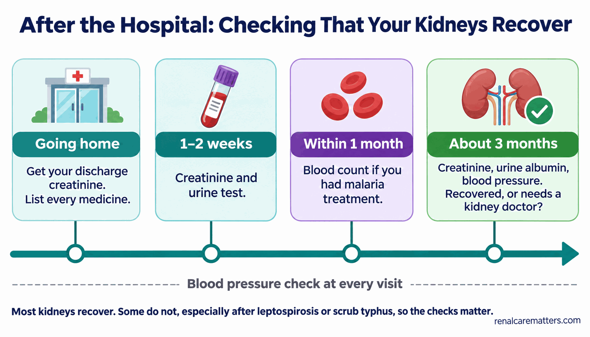
Follow-up after discharge: creatinine at 1 to 2 weeks, a blood count within a month after malaria treatment, and a full kidney check at about 3 months.Follow-up pagkauwi: creatinine sa 1 hanggang 2 linggo, blood count sa loob ng isang buwan pagkatapos ng gamutan sa malaria, at buong pagsusuri ng bato sa mga 3 buwan.Follow-up human makapauli: creatinine sa 1 hangtod 2 ka semana, blood count sulod sa usa ka bulan human sa pagtambal sa malaria, ug kompleto nga pagsusi sa bato sa mga 3 ka bulan.Follow-up kaibat mung muli: creatinine king 1 anggang 2 dominggu, blood count king lub ning metung a bulan kaibat ning pamanulu king malaria, at buung pamanigaral ning batu king mga 3 bulan.
Your follow-up planAng iyong follow-up planAng imong follow-up planIng follow-up plan mu
- Creatinine and urine test within 1 to 2 weeks of discharge, and again at about 3 months.Creatinine at urine test sa loob ng 1 hanggang 2 linggo pagkauwi, at muli sa mga 3 buwan.Creatinine ug urine test sulod sa 1 hangtod 2 ka semana human makapauli, ug usab sa mga 3 ka bulan.Creatinine at urine test king lub ning 1 anggang 2 dominggu kaibat mung muli, at pasibayu king mga 3 bulan.
- Blood pressure check at every visit; new high blood pressure can be a sign of lasting kidney damage.Pagsukat ng presyon tuwing bisita; ang bagong altapresyon ay maaaring senyales ng pangmatagalang pinsala sa bato.Pagsukod sa presyon matag bisita; ang bag-ong taas nga presyon mahimong timailhan sa malungtarong kadaot sa bato.Pamagsukat ning presyun balang bisita; ing bayung altapresyun malyaring senyales ning malawarang pinsala king batu.
- A blood count during the month after artesunate for malaria.Blood count sa loob ng isang buwan pagkatapos ng artesunate para sa malaria.Blood count sulod sa usa ka bulan human sa artesunate alang sa malaria.Blood count king lub ning metung a bulan kaibat ning artesunate para king malaria.
- Tell every future doctor and pharmacist that you had acute kidney injury, so medicines are chosen and dosed with care.Sabihin sa bawat susunod na doktor at parmasyutiko na nagkaroon ka ng acute kidney injury, para maingat na mapili at ma-dosis ang gamot.Isulti sa matag sunod nga doktor ug parmasyutiko nga naka-acute kidney injury ka, aron amping nga mapili ug ma-dosis ang tambal.Sabyan me ing balang tutuking doktor at parmasyutiku a meka-acute kidney injury ka, ban maingat a mapili at ma-dosis ing gamut.
Common questionsMga karaniwang tanongKasagarang mga pangutanaKaraniwang kutang
Are these infections contagious from person to person?Nakakahawa ba ang mga impeksyong ito mula sa tao sa tao?Makatakod ba kini nga mga impeksyon gikan sa tawo ngadto sa tawo?Makahawa ba deng impeksyun a reti manibat king tau papunta king tau?
If I need dialysis, will I need it forever?Kung kailangan ko ng dialysis, habambuhay na ba?Kung magkinahanglan ko og dialysis, hangtod sa kahangturan na ba?Nung mangailangan kung dialysis, anggang kapilan man na ba?
Is doxycycline safe for my kidneys?Ligtas ba ang doxycycline sa aking bato?Luwas ba ang doxycycline sa akong bato?Ligtas ya ba ing doxycycline king batu ku?
Can I donate blood after malaria?Puwede ba akong mag-donate ng dugo pagkatapos ng malaria?Mahimo ba ko modonar og dugo human sa malaria?Malyari ku bang mag-donate daya kaibat ning malaria?
Can I get scrub typhus twice?Puwede ba akong magka-scrub typhus nang dalawang beses?Mahimo ba ko maka-scrub typhus kaduha?Malyari ku bang magka-scrub typhus misan adwa?
Febrile acute kidney injury: the first 24 hours
Clinical position. In the Philippines the adult who presents with fever and a rising creatinine usually has leptospirosis, dengue, bacterial sepsis, or, less often recognized, scrub typhus; malaria is now concentrated in Palawan and in returning travelers. Organism-specific tests lag the clinical decision by days, early serology is frequently negative, and the treatable causes (leptospirosis, scrub typhus, malaria, sepsis) all reward early therapy. The working rule is therefore syndrome-first: stabilize, take the exposure history, send the right tests, and start empirical treatment that covers the plausible organisms before results return. The 2026 Kidney International mini-review by Shankar and colleagues frames tropical infection-associated acute kidney injury (AKI) as driven by volume depletion, hypotension, and immune-mediated injury, with outcomes worsened by delayed diagnosis and limited access to kidney replacement therapy (KRT).
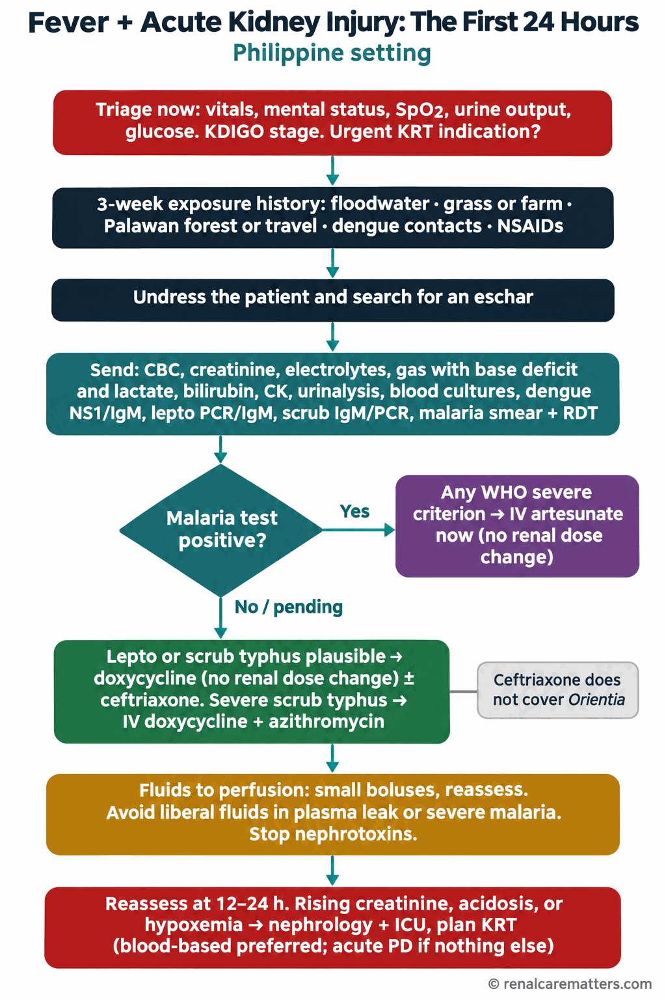
First-24-hour approach to fever with kidney injury. The two decisions that most often go wrong are omitting intracellular coverage (doxycycline or azithromycin) when scrub typhus is possible, and giving liberal fluids to patients with capillary leak or severe malaria.
- AKI
- Acute kidney injury
- KRT
- Kidney replacement therapy
- RDT
- Rapid diagnostic test
- MAT
- Microscopic agglutination test
- NS1
- Dengue nonstructural protein 1
- CK
- Creatine kinase
Honest limits of this algorithm
No randomized trial has tested a syndromic empirical strategy for undifferentiated febrile AKI. The doxycycline-first recommendation is an evidence-supported inference: doxycycline is effective for leptospirosis and scrub typhus individually, is inexpensive, and needs no renal adjustment, while missing either infection carries real mortality. Local resistance data, pregnancy (prefer azithromycin), and severe sepsis physiology should modify it.
Comparing the four infections at the kidney level
| Feature | Leptospirosis | Dengue | Scrub typhus | Malaria |
|---|---|---|---|---|
| Agent / vector | Leptospira spp.; rodent urine in water or soil | Dengue virus 1–4; Aedes mosquito | Orientia tsutsugamushi; larval trombiculid mite (chigger) | P. falciparum, vivax, knowlesi; Anopheles mosquito |
| Dominant kidney lesions | Acute tubulointerstitial nephritis (ATIN), acute tubular necrosis (ATN), rhabdomyolysis | ATN from shock and leak, rhabdomyolysis, rarely hemolytic uremic syndrome (HUS) or glomerulonephritis | ATN, ATIN, rhabdomyolysis, immune-mediated vasculitis | ATN from sequestration and cell-free hemoglobin, pigment nephropathy, rarely thrombotic microangiopathy (TMA) |
| Signature labs | Non-oliguric AKI with hypokalemia and natriuresis; high bilirubin with modest transaminases | Rising hematocrit with falling platelets; leukopenia | Transaminase rise, thrombocytopenia, chest X-ray infiltrates | Anemia, hemoglobinuria, hyperbilirubinemia, acidosis with high base deficit |
| Bedside clue | Calf tenderness, conjunctival suffusion | Retro-orbital pain, warning signs at defervescence | Eschar in about half of adult series | Periodic fever, splenomegaly, pallor |
| Confirmatory test | PCR (first week), IgM/RDT, paired MAT | NS1 (days 1–5), IgM | IgM ELISA, PCR of blood or eschar | Thick and thin films, RDT, PCR for species |
| Treatment | Penicillin, ceftriaxone, or doxycycline | Supportive; no antiviral | Doxycycline or azithromycin; both IV in severe disease | IV artesunate, then a 3-day artemisinin-based combination therapy (ACT) |
| AKI frequency | 49.2% pooled (48 studies) | About 8% pooled; higher with severe dengue and male sex | 18–53% of hospitalized series | 26.5% pooled in adults; 20–40% across series |
| Dialysis need | 14.4% pooled | 3–14% of dengue AKI | 5–10% | Frequent in severe malaria AKI (20–90% across series) |
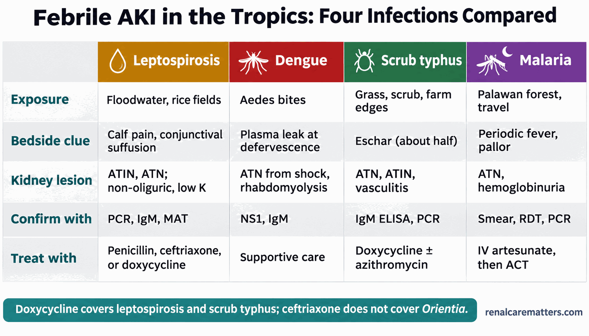
The four infections compared by vector, bedside clue, main kidney lesion, and first-line treatment. The pooled figures come from different study populations and are not directly comparable with one another.
- ATN
- Acute tubular necrosis
- ATIN
- Acute tubulointerstitial nephritis
- HUS
- Hemolytic uremic syndrome
- TMA
- Thrombotic microangiopathy
- ACT
- Artemisinin-based combination therapy
Reading the numbers. The leptospirosis figures come from a 2025 systematic review of 48 studies (pooled AKI 49.2%, 95% confidence interval [CI] 38.2–60.2%; oliguria 31.5%; dialysis 14.4%; pooled admission creatinine 3.6 mg/dL), with extreme heterogeneity (I² above 96%), so they describe hospitalized, largely referral-center cohorts rather than all infections. The malaria figures come from a 2026 review of 25 adult studies, mostly South Asian (pooled AKI 26.5%; pooled mortality in malaria-associated AKI 19.2%, 95% CI 12.9–27.7%). In a 2024 meta-analysis of 9,198 patients, severe dengue and male sex predicted dengue AKI, as did rhabdomyolysis and major bleeding; diabetes and CKD carried higher but imprecise odds whose confidence intervals were wide. For dengue, the Shankar review gives a pooled AKI prevalence of about 8%, with 3–14% of affected patients needing dialysis, and quotes malaria-associated AKI in 20–40% of cases. The scrub typhus range (18–53%, with kidney replacement in 5–10%) is also from that review; the pediatric pooled AKI frequency is lower, at 13.7%.
How often kidney injury occurs, by infection
Pooled estimates from different populations (mostly hospitalized, referral-center cohorts); not directly comparable. Sources: Sethi 2025, Shankar 2026, Meena 2026, Mukhopadhyay 2021.
Longer-term kidney outcome differs by organism. In a 2026 single-center cohort of 149 patients with infection-associated AKI followed for three months, recovery was 85% after dengue and 91% after malaria, against 61% after leptospirosis and 67% after scrub typhus, where CKD developed in 20–28% and mortality was 11–13%. The cohort is small and retrospective, but the signal argues for structured post-discharge follow-up, especially after leptospirosis and scrub typhus.
Kidney recovery at 3 months after infection-associated AKI
Retrospective, single center (Surya Prakash et al., 2026). Chronic kidney disease developed in 20–28% after leptospirosis and scrub typhus.
Deep guides: Leptospirosis · Dengue · Hantavirus
Scrub typhus: mechanisms, diagnosis, and the INTREST trial
Burden and local signal. Scrub typhus threatens about one billion people and causes an estimated one million illnesses a year across the tsutsugamushi triangle, which includes the Philippines. Philippine human data are sparse because testing is rarely done. The most current local signal is entomologic: One Health surveillance at four Luzon training sites during the 2024 and 2025 Balikatan exercises identified Rickettsia-positive chiggers at Clark Air Base (Pampanga), Fort Magsaysay becoming a high-risk area for rickettsial disease (Nueva Ecija), an emerging scrub typhus risk at Camp Aquino (Tarlac), and co-circulation of Leptospira and rickettsial pathogens at Subic. For Central Luzon clinicians, this places scrub typhus squarely on the febrile AKI differential.
Untreated mortality is contested. Reviews often quote a case fatality of up to 70% without treatment. A systematic review of 76 studies and 19,644 untreated patients found a median mortality of 6.0% with a range of 0–70%, higher with age, myocarditis, delirium, pneumonitis, and hemorrhage. The two statements are compatible: the upper figure reflects the worst historical series, while the median reflects the typical untreated course. Neither justifies delay, because treated mortality is far lower and organ dysfunction accumulates quickly.
Pathophysiology of kidney injury. Orientia infects endothelial cells and monocytes, producing a disseminated vasculitis and perivasculitis. The kidney is injured through several routes at once: prerenal hypoperfusion from fever, vomiting, and capillary leak; ATN from shock; acute tubulointerstitial nephritis from mononuclear infiltration; rhabdomyolysis; and immune-mediated vascular injury. Renal involvement travels with other organ failures: in the severe-disease cohort of the INTREST trial, complications were respiratory in 62%, hepatic in 54%, cardiovascular in 42%, renal in 30%, and neurologic in 20%. Metabolic acidosis, acute respiratory distress syndrome (ARDS), altered sensorium, and shock independently predicted death in an Indian cohort with 12.2% case fatality.
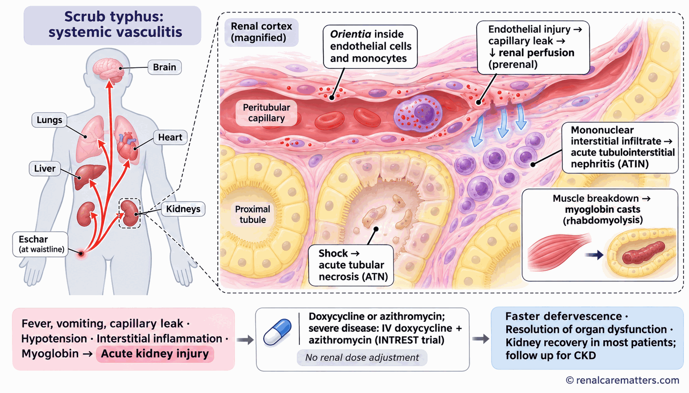
Scrub typhus infects blood-vessel linings throughout the body. The kidney is injured by low perfusion, shock, interstitial inflammation, and muscle breakdown; doxycycline and azithromycin treat the cause.
- ATN
- Acute tubular necrosis
- ATIN
- Acute tubulointerstitial nephritis
- IV
- Intravenous
- CKD
- Chronic kidney disease
Diagnosis
The eschar is the single most useful bedside sign but is present in roughly half of adults (45.5% in one prospective series) and is easily missed in skin folds. The Weil-Felix test is insensitive and should not be relied on. IgM ELISA is the practical serologic test; PCR of whole blood or eschar material confirms the organism early. The Korat-Scrub Typhus Score (outdoor activity, non-eschar rash, headache, abnormal chest radiograph, aspartate aminotransferase ≥100 U/L) stratified pretest probability in a 2026 Thai cohort of 366 febrile adults (area under the curve 0.78), but it has only internal validation and was not designed to predict severity; it is not reproduced here as a calculator for that reason.
Treatment
Trial INTREST (Varghese et al., 2023). In this multicenter, double-blind randomized controlled trial (RCT) in India, 794 patients aged 15 years or older with severe scrub typhus and at least one organ involvement received a 7-day intravenous course of doxycycline, azithromycin, or both. The composite primary outcome (death at day 28, persistent complications at day 7, or persistent fever at day 5) occurred in 33% with combination therapy, 47% with doxycycline, and 48% with azithromycin: a risk difference of −13.3 percentage points versus doxycycline (95% CI −21.6 to −5.1), which corresponds to a number needed to treat of about 8. Doxycycline and azithromycin monotherapy did not differ. Twenty-eight-day mortality and adverse events were similar across groups, so the benefit was in faster resolution of organ dysfunction and fever rather than survival.
INTREST: composite poor outcome by treatment arm
Lower is better. Risk difference with combination vs doxycycline −13.3 percentage points (95% CI −21.6 to −5.1); 28-day mortality did not differ. Varghese et al., 2023.
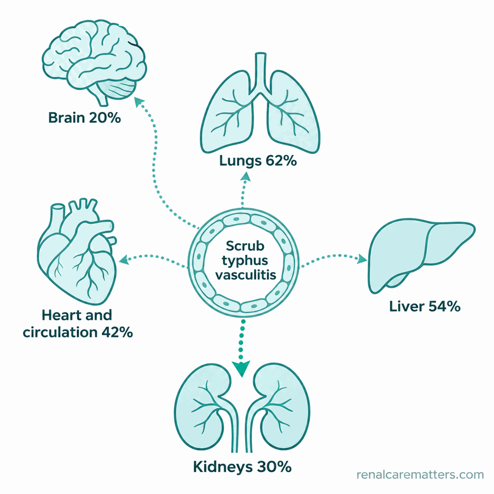
One vasculitis, five organs: organ involvement among 794 adults with severe scrub typhus in the INTREST trial (lungs 62%, liver 54%, circulation 42%, kidneys 30%, brain 20%).
Meta-analysis A 2022 network meta-analysis of 16 randomized trials (1,582 patients) found no difference in defervescence time among agents; rifampicin and chloramphenicol ranked highest for cure but rifampicin should be avoided where tuberculosis is endemic, as in the Philippines, and moxifloxacin performed poorly. Azithromycin had the fewest hematologic adverse events and is the usual choice in pregnancy and young children. For children under 8, a 2025 systematic review of 162 children receiving short doxycycline courses (median 8.5 days) concluded that dental adverse events were minimal, although it rested on only five small studies; it supports short courses when doxycycline is the better drug.
Kidney-relevant prescribing
Doxycycline and azithromycin need no dose adjustment for reduced glomerular filtration rate (GFR) or for dialysis. Uncomplicated disease: oral doxycycline for 7 days (azithromycin in pregnancy). Severe disease with organ dysfunction: intravenous doxycycline plus azithromycin for 7 days, per INTREST. Fever that persists beyond 48 hours on appropriate therapy should prompt a search for an alternative or co-infection.
Malaria-associated AKI: definition, mechanisms, and management
Philippine context. The DOH reports that all provinces except Palawan are malaria-free or have zero indigenous cases, with Palawan carrying most residual transmission in its southern forest and foothill areas; the National Malaria Strategic Plan 2023–2028 targets declaring Palawan malaria-free by 2029. Imported falciparum malaria in overseas Filipino workers and travelers remains a diagnostic trap. P. knowlesi, a macaque parasite with a 24-hour replication cycle, was first reported in humans from Palawan in 2008, has been found in wild long-tailed macaques there, and was diagnosed in a 2023 traveler returning to Canada. It is easily misread as P. malariae on microscopy and can cause AKI. Globally, the World Malaria Report 2025 estimated 282 million cases and 610,000 deaths in 2024.
Guideline WHO definition. In the World Health Organization severe malaria criteria, the renal criterion is plasma or serum creatinine above 265 µmol/L (3 mg/dL) or blood urea above 20 mmol/L. This threshold is deliberately specific and misses earlier injury, so stage AKI by KDIGO in parallel. For P. vivax, severity is defined as for falciparum without parasite-density thresholds; for P. knowlesi, hyperparasitemia is above 100,000/µL and the jaundice criterion uses a parasite density above 20,000/µL.
Mechanisms. Infected erythrocytes adhere to endothelium and sequester in the microcirculation, reducing renal microvascular flow; lactic acidosis in adults reflects this sequestration rather than hypovolemia. Intravascular hemolysis releases cell-free hemoglobin, which drives lipid peroxidation and oxidative tubular injury. Additional contributors are hypovolemia, hyperviscosity, hyperbilirubinemia, rhabdomyolysis, renin-angiotensin-aldosterone system (RAAS) activation, intravascular coagulation, and alternative-pathway complement activation, converging on ATN; immune-complex glomerulonephritis is a less common lesion. Histology in the 2026 review was predominantly ATN, with vascular injury in a minority.
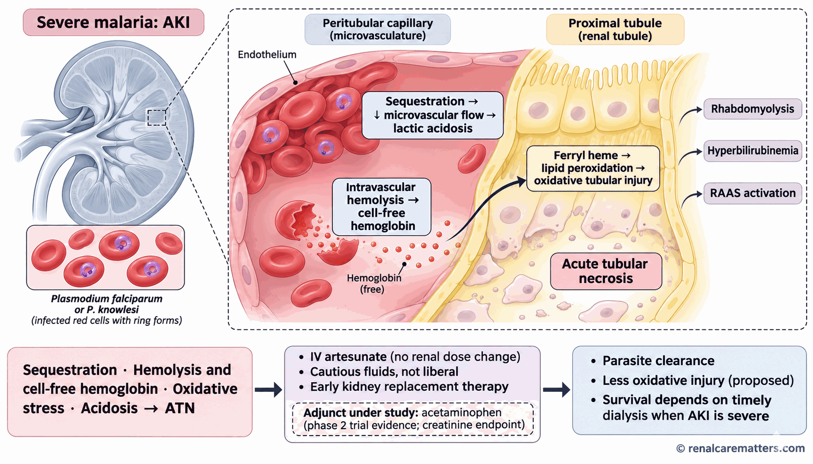
In severe malaria, infected red cells clog small vessels and burst red cells release hemoglobin that oxidizes tubule cells, leading to acute tubular necrosis. Artesunate, cautious fluids, and timely dialysis are the core response; acetaminophen is an adjunct still under study.
- AKI
- Acute kidney injury
- ATN
- Acute tubular necrosis
- RAAS
- Renin-angiotensin-aldosterone system
- IV
- Intravenous
Antimalarial treatment
Guideline The WHO guidelines (latest version 13 August 2025) strongly recommend intravenous or intramuscular artesunate for at least 24 hours in adults and children with severe malaria, including pregnant women in all trimesters, followed by a full 3-day ACT once oral therapy is tolerated. Artemisinin derivatives need no dose adjustment for kidney or liver dysfunction, hemodialysis, or hemofiltration. If quinine must be used and AKI persists or there is no improvement by 48 hours, the WHO advises reducing the dose by one third. Where artesunate cannot be completed locally, give a single pre-referral intramuscular dose and transfer. Hyperparasitemic patients can develop post-artesunate delayed hemolysis one or more weeks after treatment, so check hemoglobin during the following month.
Supportive care that protects the kidney
Fluids. In 28 adults with severe falciparum malaria resuscitated under transpulmonary thermodilution, a median of 5.45 L in 24 hours was followed by worse acid-base status in 68%, no improvement in renal function, and rising extravascular lung water in 77% (a single-arm study without a control group); eight developed pulmonary edema, and five of them died. Correct hypovolemia cautiously, then stop. Renal support, not fluid, is the answer to oligoanuric AKI in severe malaria.
Phase 2 trial Acetaminophen as adjunct. Acetaminophen (paracetamol) reduces ferryl heme and inhibits hemoprotein-mediated lipid peroxidation. In a 62-patient Bangladeshi trial, 1 g every 6 hours for 72 hours alongside artesunate reduced creatinine by a median 23% versus 14% (P = .043), with a larger effect when plasma hemoglobin was high and fewer patients with progressing kidney injury (subdistribution hazard ratio 3.0 in controls). In the larger PACKNOW trial of 396 patients with P. knowlesi, there was no benefit overall; exploratory secondary analyses suggested benefit in severe malaria (mixed-effects modeling only; the direct comparison was not significant) and in AKI with hemolysis. This suggests renoprotection in hemolytic malaria AKI; the endpoint is a surrogate (creatinine change), and no trial has shown fewer dialysis episodes or deaths. Regular acetaminophen at standard doses is reasonable for fever control in these patients and avoids NSAIDs.
Other adjuncts. Adjunctive corticosteroids and mannitol have not helped in trials and are not part of standard care; exchange transfusion has no randomized evidence of benefit and is not a standard WHO treatment. The WHO advises checking blood glucose every 4 hours, particularly in unconscious patients, and monitoring vital signs, coma score, and urine output as often as possible.
Prognosis: the CAM score
Validated score The Coma Acidosis Malaria (CAM) score was derived from the South East Asian Quinine Artesunate Malaria Trial (SEAQUAMAT) and validated in Bangladeshi and Vietnamese cohorts. It adds 0–2 points for Glasgow Coma Scale (GCS) (15 = 0; 11–14 = 1; ≤10 = 2) and 0–2 for base deficit (≤2 = 0; above 2 and below 10 = 1; ≥10 = 2). A score below 2 predicted survival with a positive predictive value near 96%. When base deficit is unavailable, plasma bicarbonate substitutes (BCAM: ≥24 = 0; 15 to below 24 = 1; below 15 = 2) with similar low-risk performance. The kidney lesson is the most important: of patients who died despite a low CAM score, about four in five had renal failure, they died late (median 108 hours), and most had not received dialysis. A low score buys time on a general ward only if creatinine is measured serially.
Dialysis: when, which modality, and how in thrombocytopenia
Timing. Start KRT for the conventional indications (refractory hyperkalemia, severe metabolic acidosis, fluid overload with hypoxemia, uremic encephalopathy or pericarditis), and anticipate them. Infection-associated AKI is catabolic and often oligoanuric, and patients in the source studies died of renal failure because dialysis was unavailable or late. Leptospirosis is the exception that runs non-oliguric with hypokalemia, so potassium may not force the decision.
Trial Modality. In a Vietnamese trial of 70 adults with infection-associated AKI (48 severe falciparum malaria, 22 sepsis), pumped venovenous hemofiltration reduced mortality from 47% with peritoneal dialysis (PD) to 15% (P = .005), cleared acidosis and creatinine more than twice as fast, and cost less per survivor. Multivariate odds of death with PD were 5.1 (95% CI 1.6–16). The Shankar review, drawing on leptospirosis experience, nonetheless describes PD as effective for AKI and useful in rural endemic settings where hemodialysis is unavailable, and highlights the Saving Young Lives program, which builds acute PD capacity in low-resource settings. The two are reconcilable: when blood-based therapy is accessible, it is preferred in hypercatabolic, acidotic patients; when the alternative is no dialysis, acute PD saves lives. Whether modern automated PD would narrow the gap has not been tested in this population.
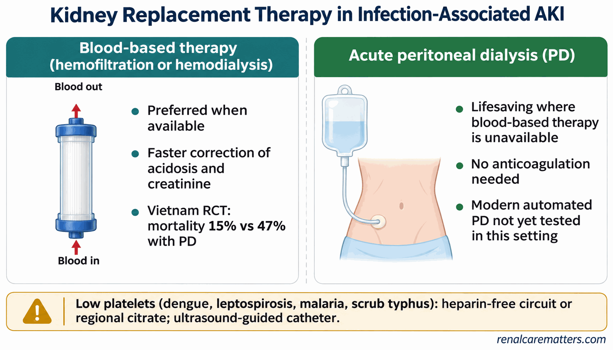
Blood-based kidney replacement therapy is preferred in infection-associated AKI when it is available; acute peritoneal dialysis saves lives where it is not.
- PD
- Peritoneal dialysis
- RCT
- Randomized controlled trial
- AKI
- Acute kidney injury
Anticoagulation with thrombocytopenia. Dengue, leptospirosis, scrub typhus, and malaria all lower platelets. Use heparin-free circuits with saline flushes, or regional citrate where the unit is experienced with it, when platelets are low or there is active bleeding; insert the dialysis catheter under ultrasound guidance and give platelet support only for active bleeding or a procedure.
Dosing during KRT. Doxycycline, azithromycin, ceftriaxone, and artesunate need no adjustment. Benzylpenicillin, piperacillin-tazobactam, carbapenems, and most other β-lactams do, as do aminoglycosides, which are best avoided.
Follow-up after infection-associated AKI
AKI from any cause carries a risk of acute kidney disease, CKD, and cardiovascular events. The organism-specific cohort data above suggest the highest residual risk after leptospirosis and scrub typhus. A practical schedule is creatinine, urinalysis, and urine albumin-to-creatinine ratio within 1 to 2 weeks of discharge and at about 3 months, blood pressure at every visit, a hemoglobin check during the month after artesunate, and a medication review to remove NSAIDs and adjust renally cleared drugs. KDIGO released a draft 2026 AKI and acute kidney disease (AKD) guideline for public review that expands follow-up recommendations; until the final version is published, the 2012 staging definitions remain the reference.
Climate, floods, and vectors
The Shankar review places tropical infection-associated AKI within a wider frame of climate change, flooding, urbanization, and weak surveillance, and argues for prevention through vector control, clean water access, vaccination, and health-system strengthening. For the Philippines the practical implications are seasonal: leptospirosis peaks after typhoon flooding, dengue with the rainy season, and chigger exposure with field and farm work. The Balikatan surveillance noted that environmental Leptospira detected in the dry season predicted wet-season risk, an observation that local health offices could use for timing prophylaxis and public advisories. Dialysis units should plan for surges in AKI referrals after major floods.
Related: Typhoon preparedness for dialysis · El Niño and heat
Calculators for febrile AKI
These tools support, but do not replace, serial clinical assessment. The new severe-malaria calculator applies the WHO criteria and the validated CAM score; there is no externally validated severity score for scrub typhus, so none is offered.
Key claims and their evidence
| Claim | Source | Evidence type |
|---|---|---|
| Tropical infection-associated AKI is driven by volume depletion, hypotension, and immune mechanisms; delayed diagnosis and limited KRT worsen outcomes | Shankar et al., 2026 | Narrative mini-review |
| Leptospirosis: pooled AKI 49.2%, oliguria 31.5%, dialysis 14.4% | Sethi et al., 2025 | Systematic review and meta-analysis (48 studies, high heterogeneity) |
| Leptospirosis: about 1.03 million cases and 58,900 deaths per year | Costa et al., 2015 | Systematic review with modeling |
| Scrub typhus: about 1 million cases per year; 1 billion at risk | Xu et al., 2017 | Review |
| Untreated scrub typhus: median mortality 6.0% (range 0–70%) | Taylor et al., 2015 | Systematic review (76 studies) |
| IV doxycycline plus azithromycin beats either alone in severe scrub typhus (composite 33% vs 47–48%) | Varghese et al., 2023 (INTREST) | Double-blind RCT, n = 794 |
| Rickettsia-positive chiggers and scrub typhus risk at Luzon training sites | Chroensinphon et al., 2026 | Entomologic and rodent surveillance |
| Malaria AKI in adults: pooled 26.5%; mortality 19.2% | Meena et al., 2026 | Systematic review and meta-analysis (25 studies) |
| CAM score below 2 predicts survival (positive predictive value about 96%) | Hanson et al., 2010 | Derivation plus two external validations |
| Liberal fluids were followed by rising lung water without renal improvement in adult severe malaria | Hanson et al., 2013 | Uncontrolled prospective physiologic study, n = 28 |
| Acetaminophen lowers creatinine in severe falciparum malaria, especially with hemolysis | Plewes et al., 2018; Cooper et al., 2022 | Phase 2 RCT (n = 62); RCT (n = 396), benefit in subgroups only; surrogate endpoint |
| Hemofiltration reduces mortality versus PD in infection-associated AKI | Phu et al., 2002 | Open RCT, n = 70 |
| Recovery after AKI lower and CKD more frequent after leptospirosis and scrub typhus than after dengue and malaria | Surya Prakash et al., 2026 | Retrospective cohort, n = 149 |